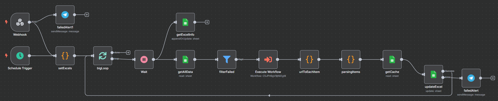

你的團隊還在把時間浪費在「複製貼上」做報表嗎？
我如何打造一個自動化數據流，將過去每週耗時2.5小時的手動更新工作，變為每日兩次、只需10分鐘的自動化任務，將數據更新頻率提升7倍，時間成本降低93%。
The Challenge
「團隊寶貴的人力被浪費在『搬運數據』的低價值工作上。手動報表不僅更新慢、易出錯，更讓管理層只能依賴『上週的數據』來做『今天的決策』。」
The Solution
「部署 24/7 的『AI 數據分析師』。它不僅自動化了報表產出，更透過 AI 提煉關鍵資訊，將數據轉化為決策洞察，讓團隊從『做報表』轉向『用數據』。」
The Challenge: 手動報表地獄
為了追蹤專案進度，團隊依賴一份從 Jira 手動更新到 Excel 的測試總表。這份報表是跨部門會議的關鍵依據，但製作過程卻是所有人的惡夢。
極度耗時
單次更新需耗費超過 2.5 小時，包含大量的複製、貼上與格式調整，完全是高成本的低價值工作。
資訊延遲
由於耗時，報表一週最多更新兩次。這意味著在大部分時間裡，團隊都在用過時的數據開會和決策。
容易出錯
純人工操作極易出錯，一個欄位複製錯誤就可能導致會議上的誤判，影響 SQA 團隊信譽。
The Solution: 24/7 的 AI 數據分析師
我打造了一個「AI 數據分析師」自動化流程，它在背景默默工作，確保 Jira 的真實情況能即時、準確地反映在 Excel 報表中，並賦予數據新的洞察力。
從 Jira 到 Excel 的自動數據橋樑
此工作流的核心是建立一個從 Jira（數據源）到 Excel（報表端）的自動化橋樑。n8n 定時觸發，從 Jira API 獲取最新數據，經過處理後，再寫入指定的 Excel 文件中。
AI 智慧摘要，終結會議考古
此流程最大的亮點是整合了 AI。AI 會自動讀取每張 Jira Ticket 中冗長的討論串，並生成一句話的精簡摘要。會議中，再也無需為了回顧討論歷史而打斷節奏。

The Impact: 數據驅動的敏捷團隊
這個自動化流程不僅是效率工具，更是推動團隊文化轉變的催化劑。
人力成本降低
-93%
單次更新時間從 2.5 小時降至 10 分鐘，每週為團隊釋放超過 4 小時的高價值工時，專注於策略與創新。
數據時效性提升
+700%
更新頻率從每週 2 次提升至每日 2 次，確保所有決策都基於最即時、最準確的數據。
會議效率倍增
AI
AI 摘要讓與會者秒懂議題背景，大幅減少會議中「查資料」的空白時間，讓溝通更聚焦、決策更快速。
核心做法
- 每日多次自動更新: 透過 n8n 的排程觸發器 (Schedule Trigger)，將過去每週最多兩次的人工更新，提升為每日兩次的自動化排程，確保資訊即時性。
- AI 智慧摘要: 利用 AI Agent 節點，將從 Jira API 獲取的 ticket 討論紀錄傳送給大型語言模型(LLM)，自動分析並摘要成精簡重點，解決會議中需耗時研讀討論串的痛點。
- 模組化工作流: 為了管理複雜性並提高可維護性，整個流程被拆分為主工作流(Master)、子工作流(Sub)與孫工作流(Grandchild)，各司其職。
- 格式化與呈現: 自動化的報告不僅更新數據，更透過 n8n 的 Code 節點搭配 JavaScript，產生帶有 Emoji 標示的 HTML 格式內容，引導讀者快速識別重點，提升報告的易讀性。